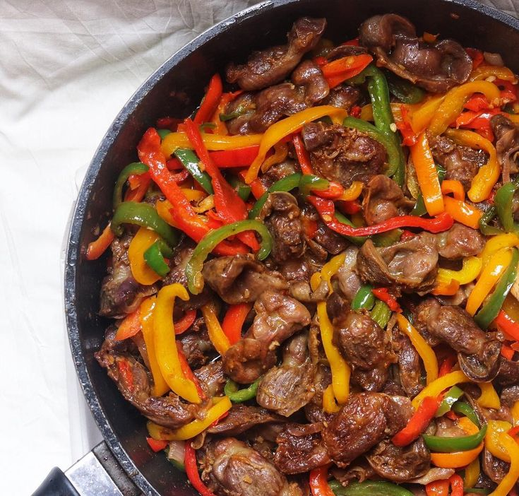
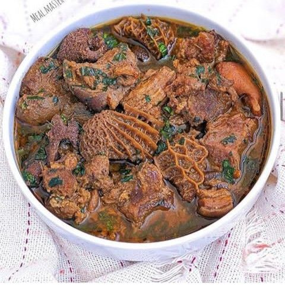

Exotic Culturally
Discover the rich flavors of South African cuisine with our exotic and culturally inspired dishes.
Chicken Feet
Try our Chicken Feet, a unique and flavorful dish that showcases the diversity of South African cuisine.

Chicken Gizzard
Indulge in our Chicken Gizzard, a unique and flavorful dish that showcases the diversity of South African cuisine.

Pork Troters
Try our Pork Troters, a unique and flavorful dish that showcases the diversity of South African cuisine.
Served with a varriety of fillings(mince curry, chicken livers or polony&chesse with russian)

Ulusu / Mogodu
Enjoy our Ulusu / Mogodu, a traditional South African dish that showcases the diversity of the region's culinary heritage.

Our Menu
We offer a variety of dishes that are designed to be both quick and delicious. From classic South African comfort foods to innovative culinary creations, our menu has something for everyone of all cultures.